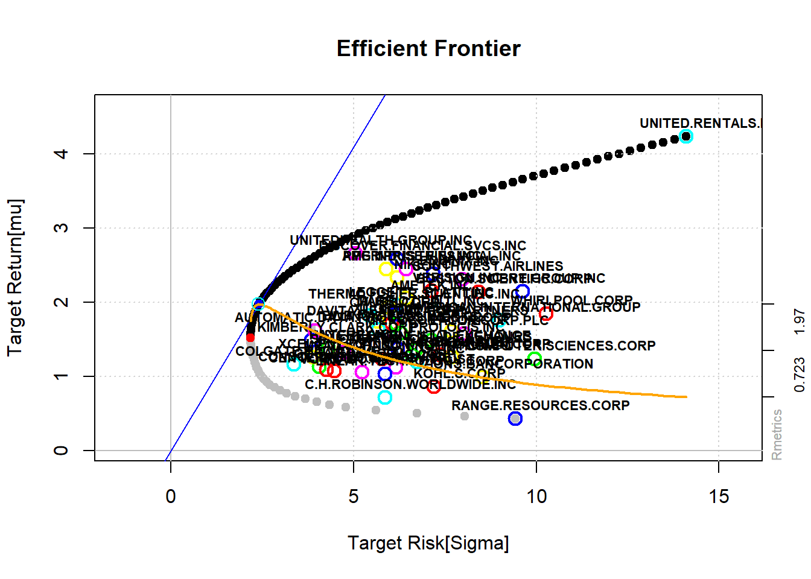

In this post we introduce a risk-free asset. That implies that we can construct a tangency portfolio, which enables us to hold a combination of the risk-free asset and the tangency portfolio. This tangency line is called Security Market Line (SML) and it enables us to surf the SML instead of the bullet, which ultimately leads to larger expected returns. The weights between the risk-free asset and the tangency portfolio are set depending on our individual risk appetite. However, in certain situations, it may be sensible to deviate slightly from the SML and “ride the bullet”, since frequent rebalancing can be costly, and minor inefficiencies are generally negligible. However, the main difference to the minimum variance portfolio is that we add another constraint. The second constraint introduces the possibility to construct our portfolio from risky and risk-free assets. \[\min_{\mathrm{w}\in \mathbb{R}^{n}}\frac{1}{2}w'\Sigma w+0\cdot(1-w'1) \ \text{ subject to } \ w'\mathop {\mathbb E}[r]+(1-w'1)r_{f}=\mu \] The first order condition in this case lead to: \[\Sigma w=\lambda(\mathop {\mathbb E}[\mathrm{r}]-1r_{f})\] After setting lambda to one and considering that weights sum up to one we obtain the final solution: \[\Rightarrow \mathrm{w}=\Sigma^{-1}(\mathop {\mathbb E}[\mathrm{r}]-1r_{f})\ ,\ w^{*}=\frac{w}{w'1} \] If investors have the same return and risk expectations, then the optimal portfolio of risky assets is the same for everyone. The tolerance for risk or risk aversion by an investor is not adjusted by reallocating among risky assets, but through the split between risky and risk-free assets. The portfolio of risky assets that investors should hold will contain a large number of assets, and thus being well diversified. This time I want to introduce a very helpful package called fPortfolio, that allows us to compute and plot the CAPM in very short steps.
However, the main difference of the CAPM to the Markowitz’s Modern Portfolio Theory (MPT) is not the introduction of a risk free rate rather than a simplification of the MPT concept. The CAPM is more practical and actually introduces the idea of idiosyncratic and systematic risk. Sharpe (1964), Lintner (1965) and Mossin (1966) worked simultanously on the equilibrium model, which can be written as: \[E[R_i]=R_{f}+(E[R_{M}]-R_{f})\cdot \beta_{i} = R_{f}+(E[R_{M}]-R_{f})\cdot {\frac {\mathrm {Cov} (R_{M},R_{i})}{\mathrm {Var} (R_{M})}}\]
Whereas MPT has arbitrary correlation between all investments, the CAPM only links investments via the market, such as the SP500. CAPM is an example of an equilibrium model such as the ICAPM (Merton (1973)) or CCAPM (Breeden, Gibbons, and Litzenberger (1989)), as opposed to model based on no-arbitrage pricing theory (Ross (2013)), such as State Preference Theory (Arrow and Debreu (1954)), Black-Scholes Option Pricing (Black and Scholes (1973)) or Term Structure Models (Heath, Jarrow, and Morton (1992)). Cochrane (2009) uncovered the equivalance between APT and equilibrium theory via the Euler Equation of the stochastic discount factor approach.
\[E_t[R_{t+1} m_{t+1}] = 1\]
Since we consider the entire SP500 for a period of 5 years, we obtain more stocks than time-points. As a consequence, the covariance matrix is singular as the matrix of returns does not have full rank. Solutions to overcome this problem, as for instance using Principal Component Analysis, are presented in upcoming posts. For now, we choose a random subset of stocks to avoid a dependent structure. The largest 10 weights in absolute terms are printed below.
# Load packages and data
Packages2Load <- c("Matrix", "quadprog", "corrplot", "tseries", "fPortfolio", "matrixcalc", "metricsgraphics", "dplyr", "data.table")
sapply(Packages2Load, function(x) suppressPackageStartupMessages(require(x, character.only = TRUE)))
# Load data
link <- "https://raw.githubusercontent.com/GabrielKaiserQFin/Portfolio-Management/master/SP500_Matrix.csv"
SP500 <- read.csv(link, header = TRUE, sep = ",")
set.seed(12)
index <- sample.int(ncol(SP500), 50, replace = FALSE) # since the return matrix does not have full rank, the cov matrix would be singular
SP500 <- timeSeries(SP500[, index])
# fPortfolio package
Constraints <- "LongOnly" # "Short"
globminSpec <- portfolioSpec()
# setSolver(globminSpec) <- solveRshortExact #Only if unlimited Short selling
globminPortfolio <- minvariancePortfolio(
data = SP500,
spec =
globminSpec, constraints = Constraints
)The portfolio with the smallest risk is the global MV portfolio, indicated by the largest dot in the graph below. The efficient frontier starts from that point onwards and goes up to the right. Obviously, every portfolio on the bullet below the global MV portfolio is called MV inefficient portfolio. The frontier is the border of all feasible portfolios. The two fund theorem implies that every linear combination of two MV portfolios is again a MV portfolio. That in mind implies that we can ride the upper side of the bullet (depending on the risk appetite) by holding a convex combination of only two efficient portfolios. (A convex combination is a linear combination of points where all coefficients are non-negative and sum to one.)
# Efficient Portfolio
setNFrontierPoints(globminSpec) <- 100
longFrontier <- portfolioFrontier(SP500, globminSpec)
tailoredFrontierPlot(
object = longFrontier,
mText = "CAPM - Long Only Constraints",
return = "mu",
risk = "Sigma"
)
The only testable implication of the CAPM is that the market portfolio is MV efficient. If the market portfolio is unobservable, and no assumption can be made about it, then the CAPM is not testable. So, the CAPM can only be used to test the acceptance of the H0 of the efficient market hypothesis. If it rejects H0, markets could be either inefficient or the model is incorrect or the entire set of assets is unknown. Some possible solutions regarding the estimation of \(\Sigma\) or even skipping this step are discussed in upcoming posts.